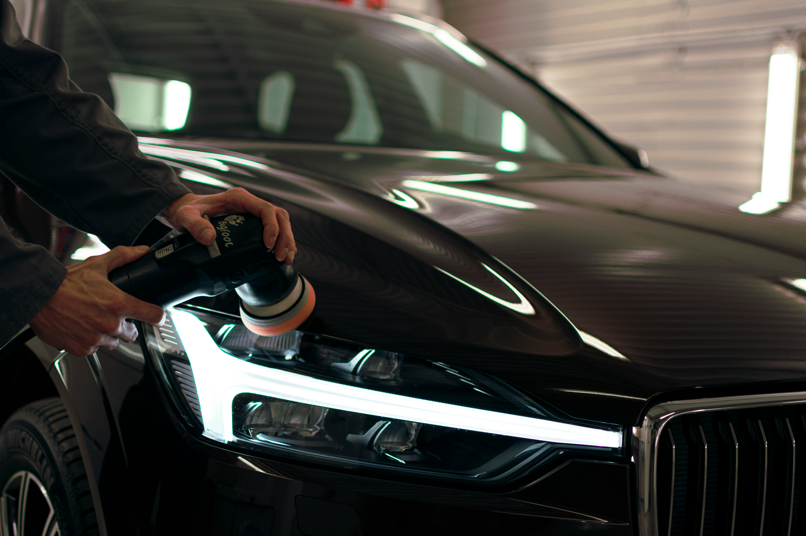

Polish pentru faruri, claritate pentru tine.
Vizibilitate maximă, siguranță garantată

Procesul de polimerizare a farurilor reprezintă cea mai eficientă și durabilă metodă de recondiționare. Spre deosebire de simpla șlefuire și lustruire, această tehnică implică aplicarea unui strat special de polimer transparent, care formează o peliculă protectoare uniformă. Prin reacția chimică de polimerizare, stratul devine dur, lucios și rezistent la razele UV, redând claritatea și strălucirea originală a farurilor.